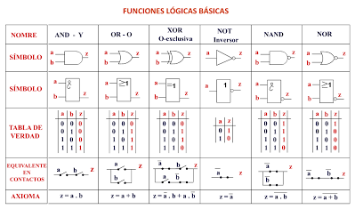
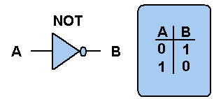
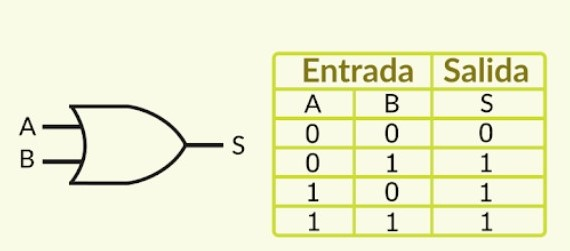
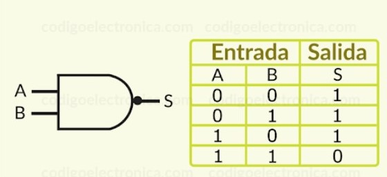
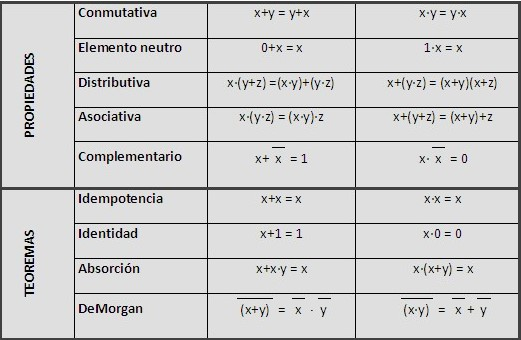
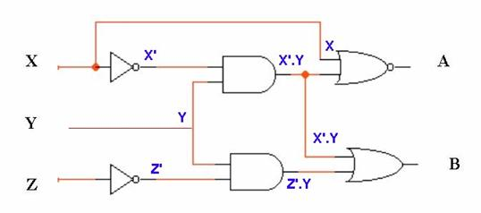
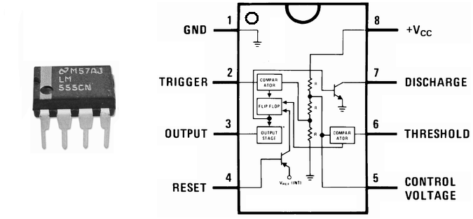
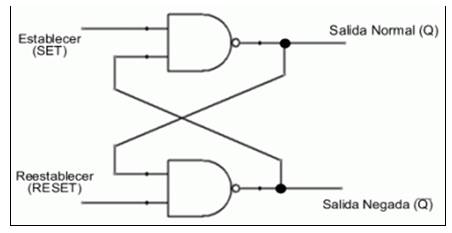
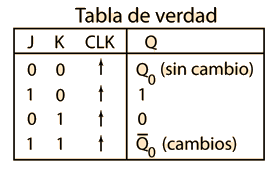
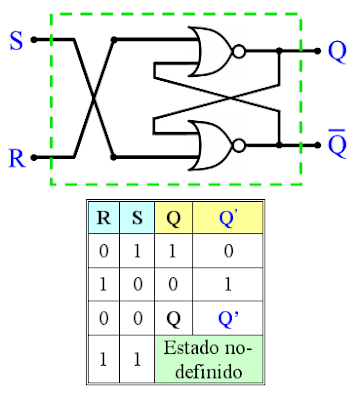

Se trata de valores de corrientes y tensiones eléctricas que solo pueden poseer dos estados en el transcurso del
tiempo. Hay o no hay corriente o tensión pero cuando hay siempre es la misma y cuando no hay siempre es de valor
0.
Las compuertas lógicas son bloques de construcción básica de los sistemas digitales; operan con números
binarios, por lo que se les denomina puertas lógicas binarias. En los circuitos digitales todos los
voltajes, a excepción de las fuentes de alimentación, se agrupan en dos posibles categorías: voltajes altos
y voltajes bajos.
Una Tabla de verdad, o Tabla de valores de verdades, es una tabla que muestra el valor de verdad de una
proposición compuesta, para cada combinación de verdad que se pueda asignar.

Acrónimo inglés de Transistor-Transistor Logic o Lógica Transistor a Transistor“. Tecnología de construcción de circuitos electrónicos digitales, en los que los elementos de entrada de la red lógica son transistores (dispositivo electrónico semiconductor utilizado para entregar una señal de salida en respuesta a una señal de entrada), así como los elementos de salida del dispositivo.
Es una puerta lógica que implementa la negación lógica . La función física del inversor, es la de cambiar en su salida el nivel del voltaje de su entrada entre los definidos como lógico ALTO Y lógico BAJO.

Práctica
Implementa la disyunción lógica. La salida X es igual a 0 cuando la entrada A y la entrada B son 0

Práctica
Produce una salida falsa solamente si todas sus entradas son verdaderas. La salida X es igual a 0 cuando la entrada A y la entrada B son 1.

Práctica
Un álgebra de Boole es toda clase o conjunto de elementos que pueden tomar dos valores perfectamente
diferenciados, que designaremos por 0 y 1 y que están relacionados por dos operaciones binarias denominadas
suma (+) y producto (.) (la operación producto se indica en general simplemente mediante la ausencia de
símbolo entre dos variables) lógicos.
a) Ambas operaciones son conmutativas, es decir, si a y b son elementos del álgebra, se verifica:
a + b = b + a a . b = b . a
b) Dentro del álgebra existen dos elementos neutros, el 0 y el 1, que cumplen la propiedad de identidad
con
respecto a cada una de dichas operaciones:
0 + a = a 1 . a = a
c) Cada operación es distributiva con respecto a la otra:
>a . (b + c) = a . b + a . c a + (b . c) = (a + b) . (a + c)
d) Para cada elemento, a, del álgebra existe un elemento denominado, ā , tal que:
a + ā = 1 a . ā = 0

Una vez que se obtiene la expresión booleana para un circuito lógico, podemos reducirla a una forma más
simple que contenga menos términos, la nueva expresión puede utilizarse para implantar un circuito que sea
equivalente al original pero que contenga menos compuertas y conexiones.
• Enunciar el problema
• Determinar el número requerido de variables de entrada y el número requerido de variables de salida.
• Asignar letras a las variables de entrada y a las de salida.
• Deducir la tabla de verdad que define las relaciones entre las entradas y las salidas.
• Obtener la(s) función(es) de Boole simplificada(s) (utilizando el álgebra de Boole, Mapas de Karnaugh u
cualquier otro) para cada salida.
• Dibujar el diagrama lógico.
• Dibujar el diagrama eléctrico (opcional).
Procedimiento de circuitos combinacionales.
• Para n variable de entrada, hay 2 n combinacionales posibles de valores de los valores binarios de
entrada.
• Para cada combinación posible de entrada, hay una y sólo una combinación de salida posible.
• Un circuito combinacional puede describirse por m funciones de Boole.
• Cada función de salida se expresa en términos de n variables de entrada
Circuito combinacional. Está formado por funciones lógicas elementales ( AND, OR, NAND, NOR, etc. ), que tiene un determinado número de entradas y salidas. Es un circuito cuya salida depende solamente de la "combinación" de sus entradas en el momento que se está realizando la medida en la salida. Los circuitos de lógica combinacional son hechos a partir de las compuertas básicas compuerta AND, compuerta OR, compuerta NOT. También pueden ser construidos con compuertas NAND, compuertas NOR, compuerta XOR, que son una combinación de las tres compuertas básicas.

Práctica
El temporizador IC 555 es un circuito integrado (chip) que se utiliza en la generación de temporizadores, pulsos y oscilaciones. El 555 puede ser utilizado para proporcionar retardos de tiempo, como un oscilador, y como un circuito integrado flip flop.

Práctica
En los Circuitos Secuenciales las salidas dependen de la conducta anterior del circuito, así como de los
valores presentes en las entradas.
Es decir la lógica secuencial tiene almacenaje (memoria) .
Los biestables son el primer eslabón de componentes para la memorización de datos. Es un multivibrador capaz de permanecer en uno de dos estados posibles durante un tiempo indefinido en ausencia de perturbaciones.
El paso de un estado a otro se realiza variando sus entradas. Dependiendo del tipo de dichas entradas los
biestables se dividen en:
• Asíncronos: Sólo tienen entradas de control. El más empleado es el biestable RS.
• Síncronos: Además de las entradas de control posee una entrada de sincronismo o de reloj.
Un biestable puede usarse para almacenar un bit. La información contenida en muchos biestables puede
representar el estado de un secuenciador, el valor de un contador, un carácter ASCII en la memoria de un
ordenador, o cualquier otra clase de información.
Ffrs (reset/set):
Sólo posee las entradas R y S. Se compone internamente de dos puertas lógicas NAND o NOR.
Ffd (delay/data):
El flip-flop D resulta muy útil cuando se necesita almacenar un único bit de datos (1 o 0).
Fft (toggle):
•Dispositivo de almacenamiento temporal de 2 estados (alto y bajo). El biestable T cambia de estado
(“toggle”) cada vez que la entrada de sincronismo o de reloj se dispara mientras la entrada T está a nivel
alto. Si la entrada T está a nivel bajo, el biestable retiene el nivel previo.
ffjk:
•Es versátil y es uno de los tipos de flip-flop más usados. Su funcionamiento es idéntico al del flip-flop
S-R en las condiciones SET, RESET y de permanencia de estado. La diferencia está en que el flip-flop J-K no
tiene condiciones no válidas como ocurre en el S-R.

Una Tabla de verdad, o Tabla de valores de verdades, es una tabla que muestra el valor de verdad de una proposición compuesta, para cada combinación de verdad que se pueda asignar.
Es uno de los más usados en los circuitos digitales, y de hecho es parte fundamental de muchos circuitos avanzados como contadores y registros de corrimiento, que ya vienen integrados en un chip. Este FF cuenta con dos entradas de datos J y K, su función es en principio la misma que el Registro básico NAND o NOR, pero con la diferencia que la condición en las entradas J = 1, K = 1, a diferencia del Registro NAND, que generaría una salida errónea o no deseada, en un FF J-K, obliga a las salidas a conmutar su estado al opuesto (Toggle) a cada pulso del reloj. Esto lo convierte en un tipo de FF muy versátil.

Tiene tres entradas, S (de inicio), R (reinicio o borrado) y C (para reloj). Tiene una salida Q, y a veces
también una salida complementada, la que se indica con un circulo en la otra terminal de salida. Hay un pequeño
triángulo en frente de la letra C, para designar una entrada dinámica.
El símbolo indicador dinámico denota el
echo de que el flip-flop responde a una transición positiva ( de 0 a 1) de la señal de reloj. Su unidad básica
(con compuertas NAND o NOR) se dibuja a continuación que, como actúa por "niveles" de amplitud (0-1) recibe el
nombre de Flip-Flop RS activado por nivel (FF-RS-AN). Cuando no se especifica este detalle es del tipo Flip-Flop
RS maestro- esclavo (FF-RS-ME). Sus ecuaciones y tabla de funcionamiento son:
Q = S + q R*
R S = 0
